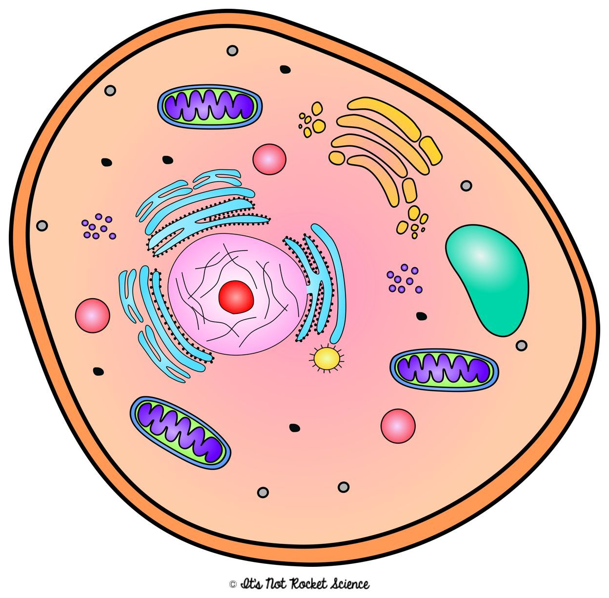

细胞核
Nucleus
细胞核储存 DNA。带核孔的核膜保护遗传物质，并调节物质进出。
The nucleus contains DNA. Its envelope has pores that regulate movement into and out of the nucleus.
YOUR CELL STUDY
Discover the structures that make life work.

动物细胞 · Animal cell · PDF p. 8
点击结构，认识它的工作
Nucleus
细胞核储存 DNA。带核孔的核膜保护遗传物质，并调节物质进出。
The nucleus contains DNA. Its envelope has pores that regulate movement into and out of the nucleus.
图像为课堂示意图，大小与数量不代表真实比例。Schematic diagram; structures are not to scale.
LEARN → PRACTICE → REVIEW
10 组 · 27 个知识点 · 37 道题
CHECK YOUR UNDERSTANDING
每题选择一个最佳答案。遇到不确定的地方，点击「不会？回到知识点」。Choose one best answer. Use “Review this topic” whenever you need help.